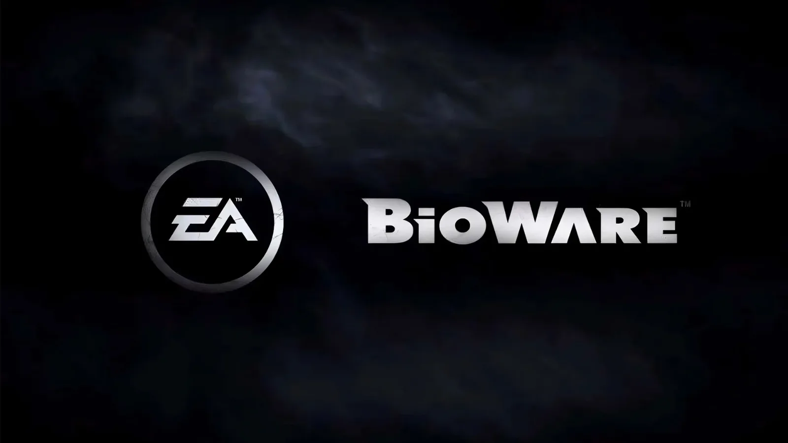
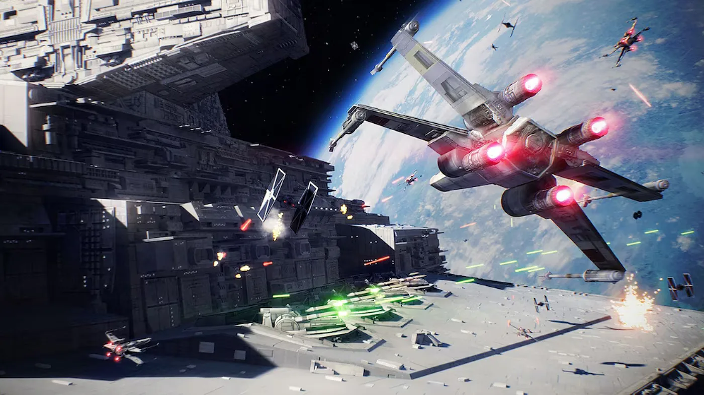
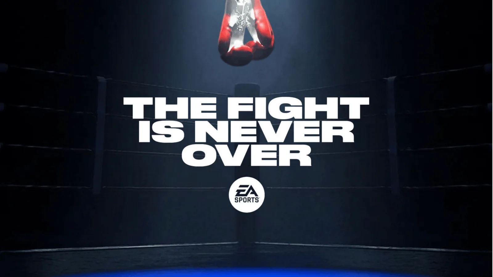
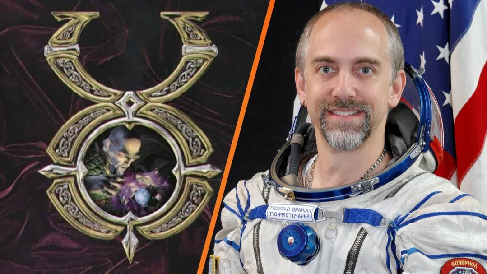

Luiso · 22 de octubre de 2026 · 4 min de lectura
La industria de los videojuegos pierde a uno de sus estudios de rol más influyentes. Electronic Arts confirmó el cierre de BioWare y la cancelación del proyecto de Mass Effect que se encontraba en sus primeras etapas de desarrollo. El anuncio se conoció el 21 de octubre, a través de un comunicado publicado por la propia compañía y un mensaje de despedida del estudio, que llevaba más de 30 años creando videojuegos centrados en la narrativa, las decisiones del jugador y el desarrollo de personajes.
En su comunicado, BioWare recordó algunos de los títulos que definieron su historia, entre ellos Baldur’s Gate, Neverwinter Nights, Star Wars: Knights of the Old Republic, Dragon Age y Mass Effect. El mensaje confirmó que el estudio está cerrando sus puertas y que el trabajo inicial sobre el próximo Mass Effect llegó a su fin. La compañía agradeció a los jugadores por haber acompañado sus mundos durante décadas y señaló que su prioridad inmediata es acompañar a los empleados afectados por la transición.
La decisión se enmarca en una reestructuración más amplia de Electronic Arts. Según información publicada por Bloomberg y recogida por medios como Reuters y Associated Press, la compañía planea eliminar alrededor de 400 puestos de trabajo, aproximadamente el 3% de su plantilla. De ese total, unos 50 corresponderían a empleados de BioWare. Las cifras de despidos proceden de fuentes familiarizadas con los planes de la empresa; el comunicado público de EA no detalló individualmente todos los puestos afectados.
Fundado en 1995 en Canadá, BioWare construyó su reputación con juegos de rol que daban un lugar central a las decisiones narrativas, las relaciones entre personajes y las consecuencias de las acciones del jugador. La serie Baldur’s Gate contribuyó a consolidar al estudio durante sus primeros años, mientras que Star Wars: Knights of the Old Republic demostró su capacidad para trasladar ese enfoque a una galaxia ampliamente conocida por el público.
Más adelante, Mass Effect y Dragon Age se convirtieron en sus franquicias más representativas. La primera propuso una aventura de ciencia ficción en la que las decisiones podían repercutir a lo largo de varios juegos; la segunda retomó elementos clásicos de la fantasía y los combinó con historias políticas, conflictos entre facciones y relaciones personales. Ambas series dejaron una influencia importante en el desarrollo de los RPG occidentales.
Sin embargo, los últimos años fueron difíciles para el estudio. Anthem no logró consolidarse como la experiencia multijugador que EA esperaba, mientras que Mass Effect: Andromeda y Dragon Age: The Veilguard tuvieron recepciones más divididas y resultados comerciales por debajo de las expectativas de la compañía. Tras el lanzamiento de The Veilguard, BioWare ya había atravesado cambios importantes en su estructura y una reducción de personal.
El cierre actual representa el golpe más fuerte para una empresa que durante décadas fue sinónimo de juegos de rol narrativos. No se trata solamente de la cancelación de un proyecto: también desaparece el estudio que desarrolló esas franquicias bajo una identidad creativa compartida.
La cancelación corresponde al próximo proyecto de Mass Effect, que todavía estaba en una fase temprana de desarrollo. Por eso, no se había presentado una fecha de lanzamiento ni una versión jugable pública. La decisión pone fin al trabajo de ese equipo, pero no implica necesariamente que EA haya anunciado la desaparición definitiva de la propiedad intelectual Mass Effect; lo confirmado es que este proyecto no seguirá adelante y que BioWare cerrará.
En paralelo, EA señaló que continuará invirtiendo en otras producciones, entre ellas el juego de Marvel’s Iron Man y la próxima entrega de Star Wars Jedi. También indicó que sus equipos de Respawn y DICE colaborarán en un futuro proyecto de disparos. La estrategia apunta a concentrar recursos en una cantidad menor de producciones de gran escala, en lugar de mantener numerosos desarrollos simultáneos.
La compañía atraviesa este proceso después de que se completara su adquisición por un consorcio liderado por el Fondo de Inversión Pública de Arabia Saudita, Silver Lake y Affinity Partners, en una operación valorada en aproximadamente 55.000 millones de dólares. El cambio de propiedad se suma a un contexto de presión por los costos de desarrollo y por la necesidad de obtener resultados comerciales más previsibles.
Para los seguidores de BioWare, el anuncio supone el cierre de una etapa importante en la historia del medio. Queda por ver cómo se administrarán las franquicias en el futuro y qué ocurrirá con los profesionales que formaron parte del estudio. Lo confirmado, por ahora, es que el equipo de Edmonton cerrará y el próximo Mass Effect fue cancelado antes de llegar a una presentación pública.
Sigan comprando el mismo juego todos los años... EA siempre defrauda, la gente más.

21 de octubre de 2026Un rumor publicado en una columna especial de la revista Electronic Gaming Monthly sostiene que DICE y Bungie estarían interesadas en desarrollar una nueva entrega de Star Wars: Battlefront. La información sugiere que Lucasfilm estaría buscando un socio para el proyecto, pero no existe confirmación oficial de que el juego esté en producción ni de que alguno de los estudios haya sido elegido.

21 de octubre de 2026Después de más de una década sin nuevas entregas, EA Sports confirmó que Fight Night volverá. El anuncio llegó mediante las redes sociales oficiales de la franquicia, aunque la compañía todavía no reveló el título definitivo, las plataformas, la fecha de lanzamiento ni detalles sobre su desarrollo. El regreso marcaría el retorno de una de las series de boxeo más reconocidas de los videojuegos.

8 de octubre de 2026Más de tres décadas después de vender Origin Systems a Electronic Arts, Richard Garriott está a punto de recuperar el control sobre los derechos de Ultima. El creador ya notificó a EA que ejercerá un mecanismo previsto por la legislación estadounidense y asegura que las conversaciones entre ambas partes continúan.
Cargando comentarios…